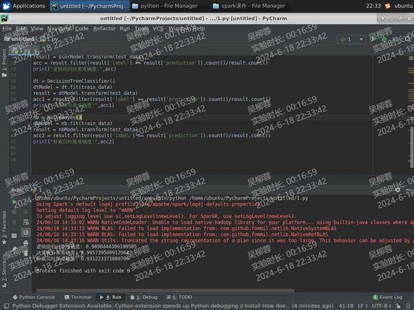
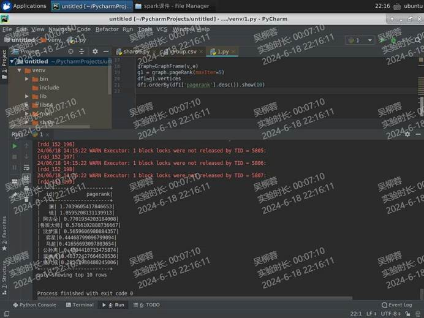

一、spark环境搭建 yarn集群模式安装
结果截图
二、pyspark环境测试
三、RDD基础练习 1 2 3 4 5 6 7 8 9 10 11 12 13 14 15 16 17 18 19 20 21 22 23 24 25 26 27 28 29 30 31 32 33 34 35 36 37 38 39 40 41 42 43 44 45 46 47 48 49 50 51 from pyspark import SparkContextsc = SparkContext() a = [5 , 6 , 14 , 7 , 3 , 8 , 2 , 9 , 1 , 10 ] rdd = sc.parallelize(a) rdd1 = rdd.map (lambda x:x*2 ) rdd2 = rdd1.sortBy(lambda x:x) rdd3 = rdd2.filter (lambda x : x >= 10 ) print (rdd3.collect())a = [5 , 6 , 4 , 3 ] b = [1 , 2 , 3 , 4 ] rdda = sc.parallelize(a) rddb = sc.parallelize(b) rddj = rdda.intersection(rddb) print (rddj.collect())rddu = rdda.union(rddb) rddr = rddu.distinct() print (rddr.collect())a = [("tom" , 1 ), ("jerry" , 3 ), ("kitty" , 2 )] b = [("jerry" , 2 ), ("tom" , 1 ), ("shuke" , 2 )] rdda = sc.parallelize(a) rddb = sc.parallelize(b) rddu = rdda.union(rddb) rdd1 = rddu.groupByKey().mapValues(list ) rdd2 = rdd1.mapValues(sum ) rdd3 = rdd2.sortByKey() rdd4 = rdd2.sortBy(lambda x:x[1 ]) a = ["a b c" , "d e f" , "h i j" ] rdd = sc.parallelize(a) rdd1 = rdd.flatMap(lambda x: x.split()) print (rdd1.collect())
四、Spark SQL & DataFrame操作 book.txt
用spark.read.csv方法读取此文件，并将第一行作为列名，得到一个dataFrame，并打印它的表结构和前10行内容 代码：
1 2 3 4 5 from pyspark.sql import SparkSessionspark=SparkSession.builder.getOrCreate() df=spark.read.csv('file:///home/ubuntu/book.txt' ,header=True ) df.printSchema() df.show(10 )
创建df的临时表，表名为book 代码：df.registerTempTable(‘book’)
按题意查询（每题都分别用df方法和sql方法） 1、选择序号和书名列，显示前20行 df代码：df1=df.select(“id”,”name”).show(20)
sql代码：df1=spark.sql(‘select id,name from book’).show(20)
2、查询评分大于等于9的书，显示书名和评分 df代码：df2=df.filter(df[“score”]>=9).select(“name”,”score”).show()
sql代码：df2=spark.sql(‘select name,score from book WHERE score>=9’).show()
3、统计各出版社的书的数量，显示出版社名和数量 df代码：df3=df.groupBy(“publish”).count().show()
sql代码：df3=spark.sql(“select publish,count(*) from book group by publish”).show()
4、将评分换算为百分制并新增一列（列名随意） df代码：df4=df.select(“*”).withColumn(“百分制评分”,df[“score”]*10).show()
sql代码：df4=spark.sql(‘select id,name,price,publish,url,score,score*10 AS newsore from book’).show()
5、把书目按照评分从高到低进行排列 df代码：df5=df.select(“*”).orderBy(df[“score”]).show()
sql代码：df5=spark.sql(“SELECT * FROM book ORDER BY score “).show()
五、DataFrame应用 Food.csv
读取Food.csv文件，通过自定义schema设置列名：id,name,kind,price,calorie 创建df并打印表内容。 代码：
1 2 3 4 5 6 7 8 9 10 11 12 13 from pyspark.sql import SparkSessionimport pyspark.sql.types as tpspark=SparkSession.builder.getOrCreate() schema=tp.StructType([ tp.StructField('id' ,tp.StringType(),True ), tp.StructField('name' ,tp.StringType(),True ), tp.StructField('kind' ,tp.StringType(),True ), tp.StructField('price' ,tp.StringType(),True ), tp.StructField('calorie' ,tp.StringType(),True ), ]) df=spark.read.csv('file:///home/ubuntu/Food.csv' ,encoding='utf-8' ,schema=schema) df.show()
将价格、热量列转为浮点类型，然后打印表的schema 代码：
1 2 3 df=df.withColumn('price' ,df['price' ].cast(tp.FloatType())) df=df.withColumn('calorie' ,df['calorie' ].cast(tp.FloatType())) df.printSchema()
统计各类别食物平均热量，再按平均热量从大到小排序 代码：
1 2 avg_calorie=df.groupBy('kind' ).avg('calorie' ).orderBy('avg(calorie)' , ascending=False ) avg_calorie.show()
统计各类别食物的总价格 代码：
1 2 sum =df.groupBy('kind' ).sum ('price' )sum .show()
将以下内容创建为另一个dataFrame（自行命名），列名为 kind1,level 主食类,2
代码：
1 2 3 4 5 6 7 data = [("主食类" , 2 ), ("肉类" , 2 ), ("蔬果类" , 3 ), ("零食类" , 2 ), ("饮料类" , 1 )] schema = tp.StructType([ tp.StructField("kind1" , tp.StringType(), True ), tp.StructField("level" , tp.IntegerType(), True ) ]) df2=spark.createDataFrame(data,schema) df2.show()
将六的df与原df按类别进行内连接，注意要去除重复列，然后打印连接后的表内容 代码：
1 2 3 joined_df = df.join(df2, df["kind" ] == df2["kind1" ]) joined_df = joined_df.drop('kind1' ) joined_df.show()
将level列的内容转换为文字的形式，1为“少吃”，2为“适当吃”，3为“多吃” （需要借助rdd算子）
代码：
1 2 3 4 5 6 7 8 9 10 11 rdd=joined_df.rdd def func (level ): if level == 1 : return "少吃" elif level == 2 : return "适当吃" elif level == 3 : return "多吃" rdd1 =rdd.map (lambda row: row + (func(row.level),)) rdd1 =rdd1.toDF(joined_df.columns + ["advice" ]) rdd1.show()
六、SparkStreaming 课件 简介和原理
数据流加载和转换
优雅的关闭
实验 基于Streaming的日志处理 准备用户行为日志文件buyer_log.txt 字段说明：日志ID、用户ID、操作时间、用户地址、操作类型，注意，字段间是以分隔符 ‘\t’ 分隔的
其中操作类型的数字表示：1登录、2浏览、3评价、4加购物车、5下单、6支付、7退货、8领券
统计10年4月份所有登录过的用户的累计登录次数，输出用户ID和对应的次数 1 2 3 4 5 6 7 8 9 10 11 12 13 14 15 16 17 18 19 20 21 22 23 24 from pyspark import SparkContextfrom pyspark.streaming import StreamingContextsc = SparkContext() stc = StreamingContext(sc,5 ) dstream = stc.textFileStream('file:///home/ubuntu/test/' ) def filter_func (x ): data=x.split('\t' ) dt=data[2 ] op=data[4 ] return '2010-04' in dt and op=='1' dstream = dstream.filter (filter_func) def map_func (x ): data=x.split('\t' ) id =data[1 ] return (id ,1 ) dstream = dstream.map (map_func) dstream = dstream.groupByKey().mapValues(len ) dstream.pprint() stc.start() stc.awaitTermination()
将日志文件用命令复制到待监控的目录，观察Streaming输出 提示：同名文件不能多次尝试，尝试过一次后，如需修改代码并再次尝试，日志文件需改名
七、Streaming窗口测试 编写streaming代码，让其监控9999端口，设置批次为1秒，窗口大小为3秒，滑动时间为2秒 代码：
1 2 3 4 5 6 7 8 9 10 from pyspark import SparkContextfrom pyspark.streaming import StreamingContextsc=SparkContext() stc=StreamingContext(sc,1 ) dstream=stc.socketTextStream("localhost" ,9999 ) dstream=dstream.map (lambda x : "--" + x) wd=dstream.window(3 ,2 ) wd.pprint() stc.start() stc.awaitTermination()
使用nc命令启动9999端口的监听，运行streaming程序 在nc下依次输入字母（约每秒钟输入一个，8~10个即可）
查看streaming的输出
调整窗口为2，滑动时间为3，再次测试查看输出
八、spark线性回归 读取gdp.csv表
任选一个省份，使用一元线性回归进行gdp预测，并用折线图展示预测值与真实值的差别 1 2 3 4 5 6 7 8 9 10 11 12 13 14 15 16 17 18 19 20 21 22 23 24 25 26 27 28 29 30 31 32 33 34 35 36 37 from pyspark.sql import SparkSessionfrom pyspark.ml.regression import LinearRegressionimport matplotlib.pyplot as pltfrom pyspark.ml.feature import VectorAssemblerspark=SparkSession.builder.getOrCreate() df=spark.read.csv('gdp.csv' ,header=True ) df=df.filter (df['province' ]=='广西' ) df=df.drop('province' ) years=df.columns[::-1 ] x=list (map (lambda x:float (x[:-1 ]),years)) gdp=df.head()[::-1 ] y=list (map (float ,gdp)) data=zip (x,y) df1=spark.createDataFrame(data,['feature' ,'label' ]) va=VectorAssembler(inputCols=['feature' ],outputCol='features' ) df1=va.transform(df1) df1=df1.drop('feature' ) lr=LinearRegression(featuresCol='features' ,labelCol='label' ) lr_model=lr.fit(df1) pred=lr_model.transform(df1) pred.show() df_pred=pred.toPandas() plt.figure(figsize=(10 ,6 )) plt.plot(x,df_pred['label' ],label="True" ) plt.plot(x,df_pred['prediction' ],label='Predict' ) plt.legend() plt.show()
九、spark分类 读取蘑菇数据表mushroom.csv
使用三种分类模型对蘑菇是否有毒进行预测（p为有毒e为无毒），计算预测准确率 1 2 3 4 5 6 7 8 9 10 11 12 13 14 15 16 17 18 19 20 21 22 23 24 25 26 27 28 29 30 31 32 33 34 35 36 37 38 39 40 41 42 43 44 45 from pyspark.sql import SparkSessionspark = SparkSession.builder.getOrCreate() df = spark.read.csv('mushrooms.csv' , header=True ) from pyspark.ml.feature import StringIndexercols = df.columns[1 :] for i in cols:indexer = StringIndexer(inputCol=i, outputCol=i + '1' ) df = indexer.fit(df).transform(df) indexer = StringIndexer(inputCol='class' , outputCol='label' ) df = indexer.fit(df).transform(df) from pyspark.ml.feature import VectorAssemblernames = list (filter (lambda x:'1' in x,df.columns)) vecAss = VectorAssembler(inputCols=names, outputCol='features' ) df = vecAss.transform(df) dfi = df.select(['label' , 'features' ]) train_data, test_data = dfi.randomSplit([4.0 , 1.0 ]) from pyspark.ml.classification import LogisticRegression,DecisionTreeClassifier,NaiveBayesblor = LogisticRegression() blorModel = blor.fit(train_data) result = blorModel.transform(test_data) acc = result.filter (result['label' ] == result['prediction' ]).count()/result.count() print ("逻辑回归分类准确度:" ,acc)dt = DecisionTreeClassifier() dtModel = dt.fit(train_data) result = dtModel.transform(test_data) acc1 = result.filter (result['label' ] == result['prediction' ]).count()/result.count() print ("决策树分类准确度:" ,acc1)nb = NaiveBayes() nbModel = nb.fit(train_data) result = nbModel.transform(test_data) acc2 = result.filter (result['label' ] == result['prediction' ]).count()/result.count() print ("朴素贝叶斯准确度:" ,acc2)

十、spark聚类、协同过滤 足球队聚类
1 2 3 4 5 6 7 8 9 10 11 12 13 14 15 16 17 18 19 20 21 22 23 24 25 26 27 28 29 30 31 32 33 34 35 36 from pyspark.sql import SparkSessionimport numpy as npfrom pyspark.ml.feature import VectorAssemblerfrom pyspark.ml.clustering import KMeansspark=SparkSession.builder.getOrCreate() df=spark.read.csv('AsiaFootball.csv' ,header=True ) columns=df.columns[2 :5 ] for i in columns: df=df.withColumn(i,df[i].cast('float' )) va=VectorAssembler(inputCols=columns,outputCol='features' ) df1=va.transform(df) km=KMeans().setK(3 ) dff=df1.select('features' ) kmModel=km.fit(dff) centers=kmModel.clusterCenters() print ("Cluster Centers" ,centers)def func (n ): index=0 min_dis=9999 for i in range (len (centers)): v1=np.array(n[1 ]) v2=np.array(centers[i]) dis=np.linalg.norm(v1-v2) if dis<min_dis: min_dis=dis index=i return (n[0 ],index) li=df1.select('国别' ,'features' ).collect() li=list (map (func,li)) df1 = spark.createDataFrame(li,['国别' ,'分类' ]) df1.orderBy('分类' ).show()
电影推荐
1 2 3 4 5 6 7 8 9 10 11 12 13 14 15 16 from pyspark.sql import SparkSessionspark=SparkSession.builder.getOrCreate() from pyspark import Rowdf=spark.read.text('u.data' ) rdd=df.rdd.map (lambda x:x[0 ].split('\t' )).map (lambda x:Row(uid=x[0 ],fid=x[1 ],rate=x[2 ],time=x[3 ])) df1=spark.createDataFrame(rdd) df1.show(10 ) df1=df1.withColumn('uid' ,df1['uid' ].cast('float' )) df1=df1.withColumn('fid' ,df1['fid' ].cast('float' )) df1=df1.withColumn('rate' ,df1['rate' ].cast('float' )) train,test=df1.randomSplit([0.9 ,0.1 ]) from pyspark.ml.recommendation import ALSals=ALS(userCol='uid' ,itemCol='fid' ,ratingCol='rate' ) model=als.fit(train) pred=model.transform(test) pred.show()
英雄组合数据表group.csv
提示：
1、读取group表，过滤掉使用次数较低的数据，减轻后续工作量
2、读取所有出现的英雄名字，去重，构建顶点表（直接以英雄名字作为id）
3、读取组合表，英雄1改为起点列、英雄2改为终点列，使用场次改为权重列，构建为边表
4、构建图，执行pagerank算法得出结果
1 2 3 4 5 6 7 8 9 10 11 12 13 14 15 16 17 18 19 \ from pyspark.sql import SparkSessionfrom graphframes import GraphFramespark=SparkSession.builder.getOrCreate() df=spark.read.csv('group.csv' ,header=True ) hero=df.select("英雄1" ).distinct() v=hero.withColumnRenamed('英雄1' ,'id' ) df=df.withColumnRenamed('英雄1' ,'src' ) df=df.withColumnRenamed('英雄2' ,'dst' ) df=df.withColumnRenamed('组合使用场次' ,'weight' ) e=df.drop('胜率' ) e=e.filter (e['weight' ]>20 ) graph=GraphFrame(v,e) g1 = graph.pageRank(maxIter=5 ) df1=g1.vertices df1.orderBy(df1['pagerank' ].desc()).show(10 )
